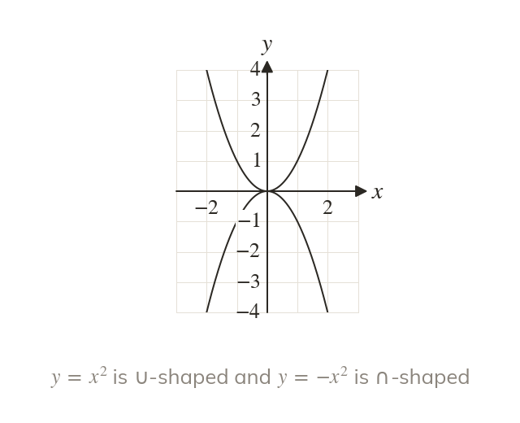
The sign of the term sets the shape
A positive coefficient of gives a ∪-shaped curve. A negative one turns it upside down, a ∩.
A sketch shows at a glance what a quadratic does, with its shape, its roots, where it crosses the y-axis and its turning point. Completing the square gives the turning point exactly, and the discriminant next lesson says how many times the curve meets the x-axis.
Work down the page at your own pace. Write every answer in your book first, then click to check it.
Read each card, then follow the worked examples one step at a time.

A positive coefficient of gives a ∪-shaped curve. A negative one turns it upside down, a ∩.
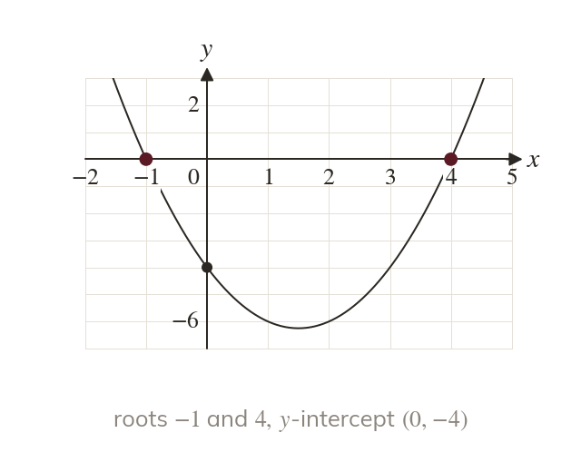
The curve meets the y-axis where at the constant term. It meets the x-axis at the roots, found by factorising.
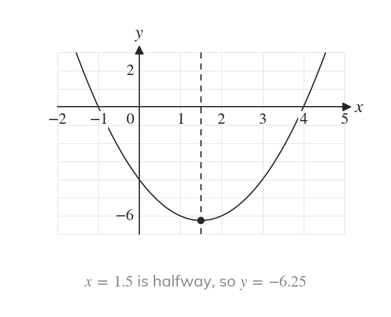
The line of symmetry passes halfway between the roots. Substituting that x gives the y-coordinate of the turning point.
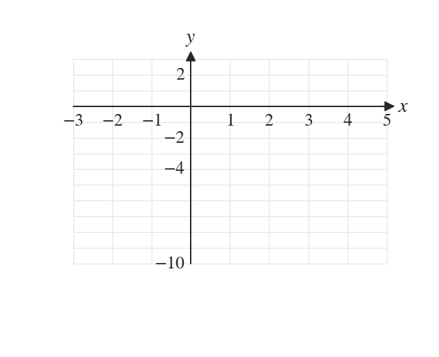
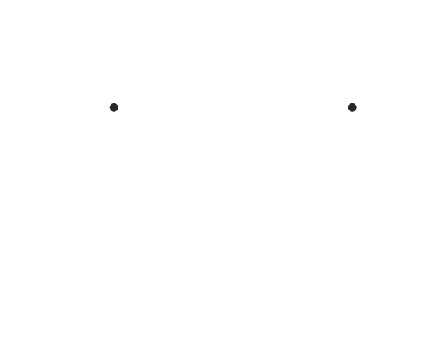
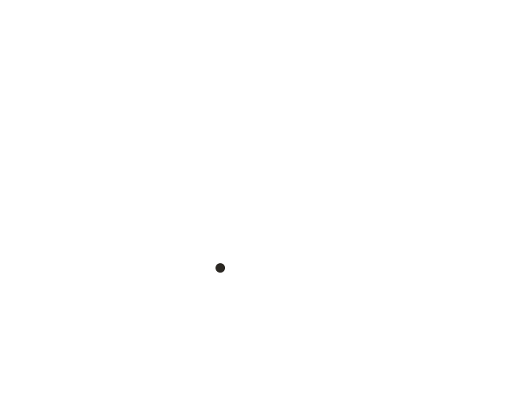
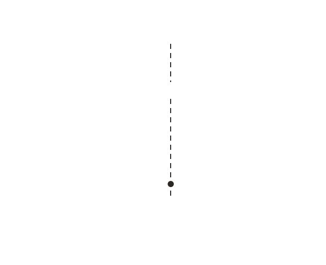
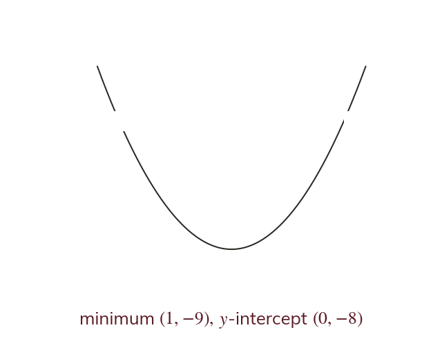
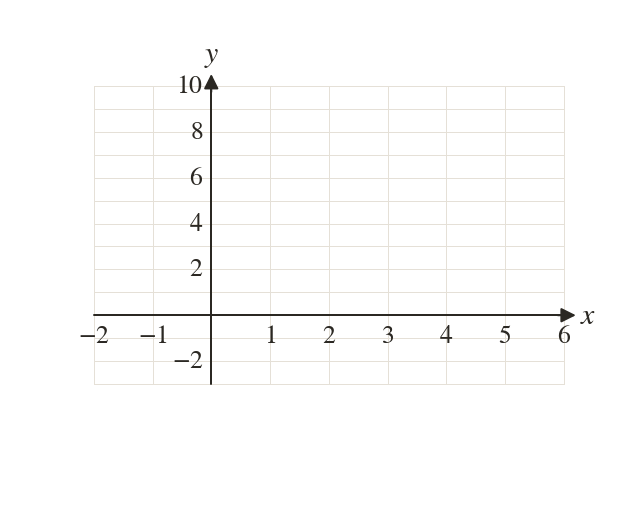
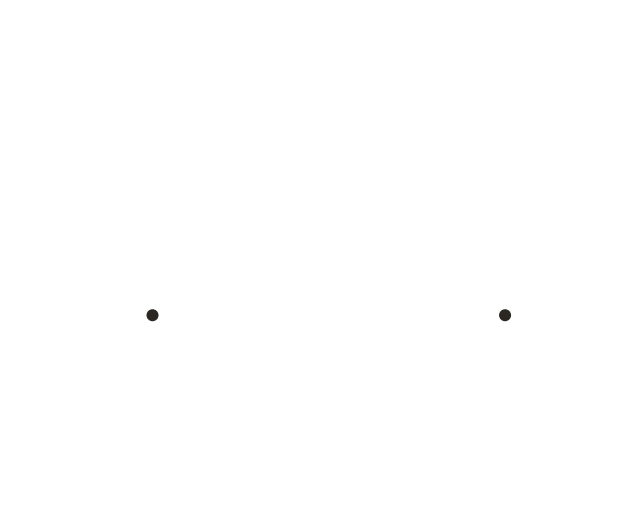
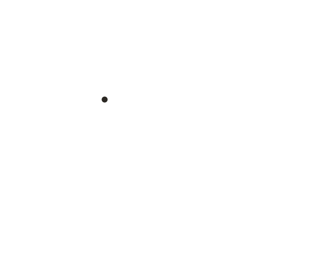
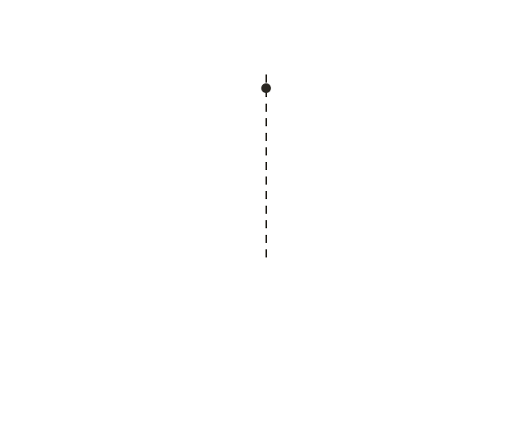
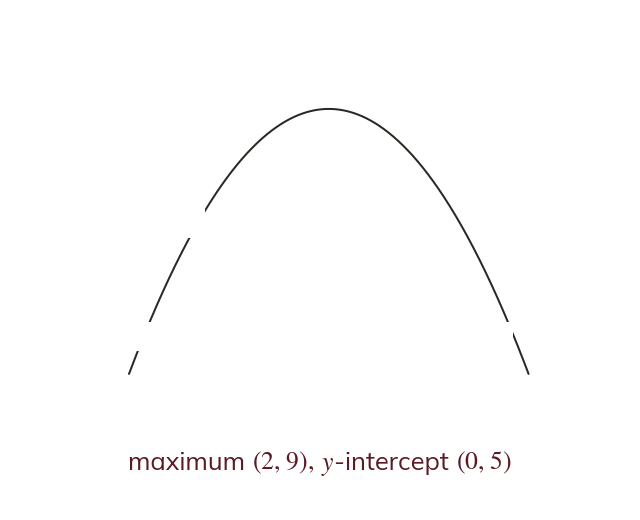
Pick an answer. If it's wrong, the feedback tells you which mistake it was.
Write the blanks in your book first, then tap each one to check.
Read each card, then follow the worked examples one step at a time.
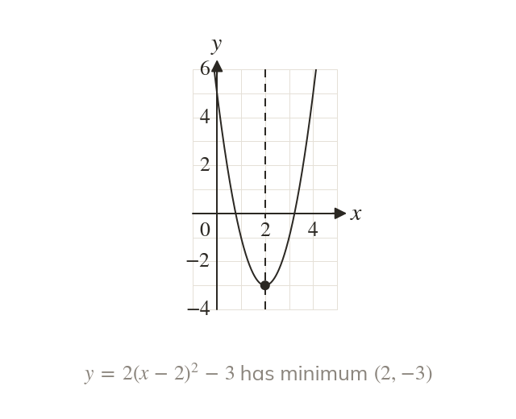
In the square is zero when and positive everywhere else. So the turning point is and the line of symmetry is
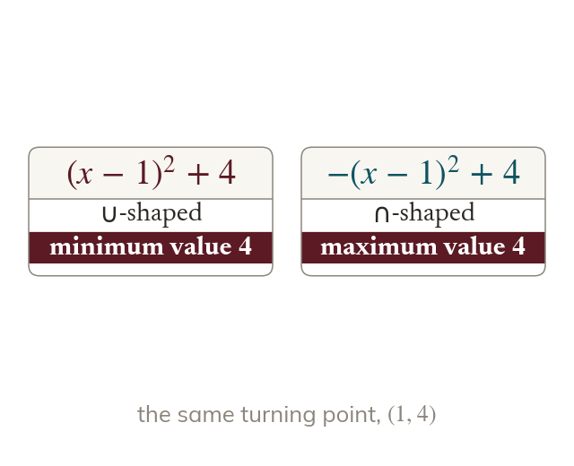
When a is positive, q is the least value of a minimum. When a is negative, q is the greatest value, a maximum.
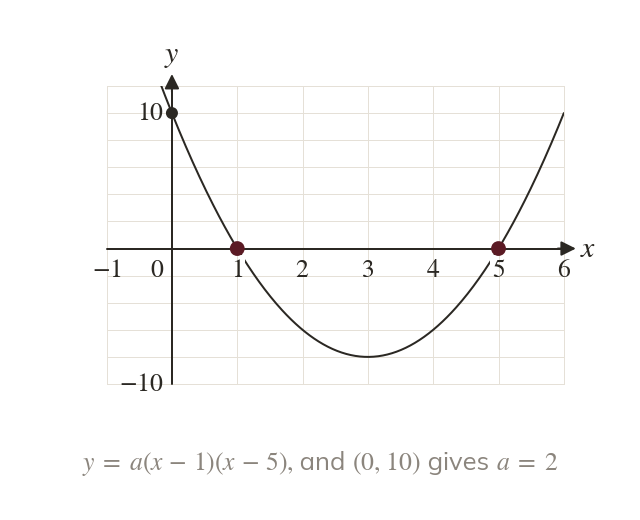
Roots and give One more point on the curve fixes a.
Pick an answer. If it's wrong, the feedback tells you which mistake it was.
Write the blanks in your book first, then tap each one to check.
Finished? Next lesson: 2.5 The Discriminant.
For each skill, tap the one that is true for you today. Your Revise pages start with anything you mark Not yet.
Your ratings are saved on this device only.
Log in, then search for a code to practise that skill.